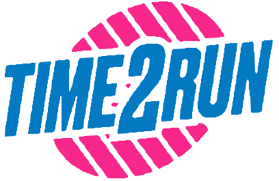

Garmin Connect IQ · Watch Face
TIME2RUN
Бесплатный циферблат бегового клуба TIME2RUN для совместимых AMOLED-моделей Garmin Forerunner.
Четыре темы
Sport Dark, Sport Light, Signature Dark и Signature Light. В активном режиме отображаются время, дата, шаги, пульс и заряд батареи; темы Sport также показывают калории. Always-On отображает приглушённое время.
Даты и названия пунктов настройки в приложении — на русском языке.
Контакты
Публичный разработчик: Mihanoid
Поддержка: mihanoid2012@gmail.com
Telegram: t.me/Mihanoid68